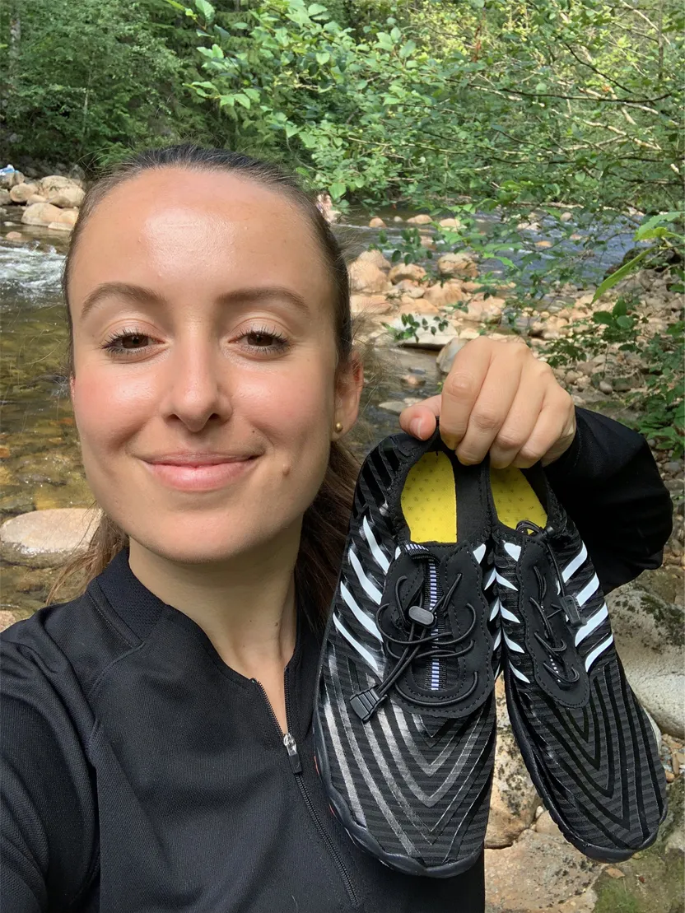

Revolutionary New Shoe Offers Seniors Relief from Neuropathy Pain and Numbness, Say Experts
Reports of a strange trend have been making waves in certain online circles with a reported million Americans taking part.
Millions of Americans suffering from foot issues such as plantar fasciitis, neuropathy, swollen legs and feet, and aching soles have turned to an unlikely hero. Folks have described this trendy new lifehack as,
“The only method that actually helped heal my foot neuropathy”
And
“Weird, but effective at dealing with swollen and painful feet.”
So what exactly is going on?
Millions of Americans have suddenly decided to wear these shoes for at least 20 minutes a day…
But there’s a twist.
If it were just ‘regular’ shoes, then this story would end right here.
No, the secret to this new lifehack is a uniquely formulated pair of barefoot shoes designed to combat all kinds of foot pain and swollen feet.
If you suffer from foot neuropathy, plantar fasciitis, lead an athletic lifestyle, are seeking to lose weight, or are an older American, this just might be the most important thing you read today.
These new shoes utilize a freshly patented design that has never before been available for consumers.
Thanks to this new technology called “Natural Alignment,” people from all walks of life– young or old, male or female, active or inactive– have been given a second wind to start living their lives again.
They’ve said goodbye to foot neuropathy, plantar fasciitis, bunions, frequent foot pains, unbearably itchy and swollen ankles, weak arches, and swollen feet.
So what’s the big secret?
At its core, it’s all thanks to the patented “Natural Alignment” technology.
This previously military-exclusive technology promotes increased blood flow and circulation that results in de-oxygenated blood cells and toxins being carried away, while bringing in new, healthy blood back into the foot.

You’ll get reduced swelling in the feet and a whopping 6x increase in your body’s natural healing process.
People with foot neuropathy, plantar fasciitis, athletes, and folks with foot pain have been wearing Grounded Footwear Barefoot Shoes for at least 20 minutes a day, and say they’ve been experiencing significant relief from pain.
Why is this new lifehack so popular?
Well, Grounded Footwear Barefoot Shoes and their Natural Alignment technology aren’t BRAND NEW, strictly speaking.
For years, this technology has been in use by the military.
During hours of training, field exercises, and actual field operations… Soldiers would wear these barefoot shoes, promoting recovery in their legs and feet.
This technology eventually made its way to hospitals, playing a crucial role in helping patients recover from surgeries.
But the reason why this technology has never seen wide civilian adoption is because barefoot shoe technology of this magnitude has historically been extremely expensive to manufacture… that is, until now.
After investing millions of dollars on research and development, a company by the name of Grounded Footwear made breakthrough discoveries to drastically bring down the cost of production.
And thanks to them, their revolutionary shoes are now powered by the latest in natural alignment technology and have finally been made available to the public.
But that’s not all
One of the main reasons why Grounded Footwear Barefoot Shoes blew up so much is thanks to ONE simple feature:
Grounded Footwear Barefoot Shoes help heal your feet with just 20 minutes of wear each day.
Since you really only need to wear Grounded Footwear Barefoot Shoes for a short period daily, they don’t impede your everyday life.
They’ll get your feet feeling like new for the next day, and it’s basically like giving your feet a continuous massage all throughout the day.
They use an easy-breathe material so that your feet won’t overheat, ensuring that you stay comfortable throughout your wear.
You also won’t have to deal with sweat build-up and messy clean-ups.
The massaging sensation, similar to that of a foot massage, has the added benefit of helping you feel more relaxed and comfortable throughout the day.
There are no other products available to the public that can match Grounded Footwear Barefoot Shoes’ effectiveness and comfort. Not only that, but thanks to the latest cutting-edge technology, they glide on and off with ease… Not like other shoes that can leave you struggling for 30 minutes just to get them on!
And ever since they’ve gone public with their product, thousands of Americans have adopted this trend like wildfire.
With so many people using them, happy customers have developed new ways to use Grounded Footwear Barefoot Shoes, calling it the best life hack of 2024.
Here are just a few ways people are turning Grounded Footwear Barefoot Shoes into their own life hacks...
Life Hack #1: Seniors Turn Back The Clock On Aging Feet
Dan E, a 68 year old man, talks about how Grounded Footwear Barefoot Shoes helped his foot pain and eventually helped him run a marathon.
He states, “My feet had started to swell, and there was a sharp pain riding up my leg. Both my heels felt tight and anytime I tried to take a step, that sharp pain would whip out like a crack of lightning from my heels” and that “I could barely get around without any assistance, and I was forced to stop running.”
But after using Grounded Footwear shoes, he not only felt healthy enough to train again, but he actually managed to finish a marathon!
Life Hack #2: Top Athlete's Hack To Never Getting Sore
Grant W, an aspiring Olympic sprinter, would often suffer from swelling of the legs after every workout.
For hours after his training, he would be forced to deal with a growing discomfort about his legs.
“Every athlete knows that your legs will always take a beating, no matter what you do. The swelling and the aching was annoying, but unavoidable, so I didn’t look too much into it.”
But thankfully for Grant, one of his coaches recommended Grounded Footwear Barefoot Shoes after reading up on it online.
“It wasn’t something I was unfamiliar with. I mean, they were barefoot shoes, I’ve used those before,” Grant said. “But when I put these on, I knew they were different. And within the hour, my feet felt great again. And the next day, my feet and legs weren’t even tired, let alone sore!”
In fact, Grant isn’t the only top-level athlete using Grounded Footwear Barefoot Shoes. Around the world, many athletes swear by Grounded Footwear Barefoot Shoes and their unrivaled effectiveness when it comes to feet and leg recovery.
Life Hack #3: A Prenatal Dream For Swollen Feet
Jenna K, a 29 year old woman, was 6 months pregnant with her first child when she started getting swelling in the legs.
“It hurt. A lot. My legs just felt really heavy all the time and they had ballooned up to a ridiculous size. I looked online and many people also had the same problem. I saw a recommendation for Grounded Footwear barefoot shoes, so I bought a pair.”
The human body produces nearly 50% more body fluid when pregnant, so swelling ends up being a common condition that can lead to pain or discomfort.
Wearing barefoot shoes can help during pregnancy to prevent tension and heaviness in the legs.
In particular, wearing Grounded Footwear Barefoot Shoes during pregnancy can help with discomfort and promote better blood circulation in the legs.
“I feel like it took a little while for Grounded Footwear Barefoot Shoes to REALLY kick in, but within the week, I was feeling much better. Maybe that just showed how crazy the swelling had gotten. I haven’t stopped using Grounded Footwear Barefoot Shoes, and I don’t plan to. The swelling and the pain was driving me bonkers!”
Life Hack #4: Best Travel Hack To Make Long Flights More Comfortable
“When you fly as much as I do, you pick up a few trips. My job doesn’t exactly pay for first class tickets, all expenses paid. I used to spend hours cramped in coach and I would slowly untangle myself before finally getting up. It sucked.”
Long flights and cramped spaces are a recipe for stiff muscles and swollen feet. It’s not so bad a few times, but if you’re a frequent flier, you’re bound to develop some sort of muscle-related issues. Also, Grounded Footwear Barefoot Shoes may help keep you mobile during flights, which can help prevent dangerous blood clots.
“The biggest problem was finally landing and discovering that my ankles had swollen to twice the normal size. It would even hurt to walk to baggage claim.”
“So when I found Grounded Footwear, I gave them a try. I’d put them on before getting on the plane, and I’d feel relaxed and comfortable. Then when I landed, I’d saunter on out without any cramping, swelling, or aching. It’s absolutely the best.”
Life Hack #5: These “Barefoot Shoes” Are a Godsend for Diabetic Neuropathy
Clarence T, a 56 year old man with diabetes, describes his experience with Grounded Footwear Barefoot Shoes to help treat his diabetic neuropathy.
“Diabetes runs in the family, and I don’t have a very healthy lifestyle, so I knew it was coming. It wasn’t that bad, but when my feet started hurting for no reason, I got spooked.”
Clarence went to his doctor and was diagnosed with neuropathy, a condition where his toes and feet would hurt due to nerve damage brought about by diabetes.
“And boy let me tell you, after a week, that pain was REALLY starting to hurt. I could barely walk, not that I wanted to. But my doctor told me to order Grounded Footwear Barefoot Shoes and told me to walk around in them for at least 20 minutes daily.”
“Within a couple days, the pain had diminished significantly all throughout the day! And within a week, it was gone. I was blown away and pretty shocked at how well it all worked!”
Life Hack #6: A Sure-Fire Way To Make Plantar Fasciitis A Thing Of The Past
Glenn N, a 34 year old construction worker in Kentucky, suffers from a recurring pain in his soles and ankles.
“It was hard to even get around and I was almost fired from my job because I was slowing down too much and taking too many sick days.”
Desperate, Glenn visited a family physician who diagnosed him with plantar fasciitis.
“The doc also told me about Grounded Footwear and how it was getting popular online. So I bought a pair and tried them as soon as they arrived. The next morning after wearing them, I was feeling amazing!”
“And after a week, it felt like I was back to normal again. The plantar fasciitis was gone and I feel like I got my life back! No more pain, no more slow work, and no more sick days.”
Life Hack #7: Wear Them After Surgery
“We’ll often keep patients in these Grounded Footwear Barefoot Shoes , of course they used to be called something different before. And we’ll prescribe it to those who might need physical therapy after being bedridden for long periods of time,” said Dr. Yates.
The chance of developing painful, dangerous blood clots in the legs goes up drastically after surgery, and it also goes up if you’re confined to your bed.
“These shoes help keep patients mobile due to their design, which can help prevent dangerous clots and improve blood flow in the legs. This reduces the risk of clotting while you aren’t as active as usual.”
Life Hack #8: Say Goodbye To Vericose and Spider Veins
Vein-related problems are becoming one of the more common conditions affecting Americans today. About 40 percent of the US population may be affected by chronic venous insufficiency, a condition that can lead to more serious issues such as varicose veins.
An anonymous survey of online users who use Grounded Footwear revealed that nearly 15% of users suffer from Chronic Venous Insufficiency. Surveyed users have said,
“I use Grounded Footwear barefoot shoes to help with my spider veins. Before I started using them, standing on my feet all day would result in my legs starting to feel really heavy and my ankles swell up like crazy. Of course, I don’t have that problem anymore.”
“My doctor said I had chronic venous insufficiency, which is why I get varicose veins so often when I run. He recommended Grounded Footwear shoes and they’ve been great. Unexpectedly, they’ve also made night cramps go away, so that’s been awesome.”
This was good and all, but what did others have to say about Grounded Footwear?
I searched all over social media and looked for reviews on the internet…
Grounded Footwear Barefoot Shoes even has thousands of 5-star reviews from happy customers, here are just some of them:

With how popular it was, naturally, I had to try it myself
Having interviewed so many people and having done so much research, I wanted to get in on the fun for myself.
And I wanted to tackle the following points that users were using Grounded Footwear Barefoot Shoes for:
-
(Diabetic) neuropathy/general foot pain
-
Plantar fasciitis
-
Pregnancy swelling
-
Legitimate plane flying hack?
My family is genetically predisposed towards diabetes, and my dad has been the most recent name crossed off from the roster of “who’s next?”
I learned about this trend while looking for a way to treat my plantar fasciitis at home (I like to play tennis on the weekends and the foot pain was really cramping my style).
And while researching, I found Grounded Footwear Barefoot Shoes. And as it turns out, there were a few things I read that made me think “oh maybe that would work for us.”
“Us” being my diabetic dad, my own plantar fasciitis, my wife’s pregnancy pains, and my sister’s frequent travel woes.
Would Grounded Footwear shoes really be the universal panacea that people claim it to be? Well, we’ll find out soon enough.
Did it help with my dad’s neuropathy?
To start, we ordered one pair of Grounded Footwear Barefoot Shoes and we were going to take turns using them since we’re the same foot size.
My dad’s been complaining about foot pain for awhile now, even before he got diagnosed with diabetes. It’s not a lifestyle-ending diagnosis, but he definitely stays home more often than he’d like.
We had him try out the Grounded Footwear Barefoot Shoes for three days. Based on what I had read online, that would have been plenty of time to suss out its effectiveness. The morning after he put it on, he called me to tell me that his legs felt amazing. The pain was still there, but only slightly.
After the third day, I visited him and saw him outside doing yard work again. I was pretty surprised, and so was he. He didn’t want to give the Grounded Footwear Barefoot Shoes back, so I had no choice but to buy another pair.
But things were looking promising.
What about my wife’s pregnancy swelling?
Originally, we were supposed to test my plantar fasciitis, but my wife wanted to try them out first so I ordered a pair in her size. Her legs HAD been looking pretty painful, especially around her ankles, so I helped her put them on each day for at least 20 minutes.
After several days, we found that the swelling in her legs had reduced considerably. She was much more comfortable walking around again, and her mood had improved by a ton.
As for plantar fasciitis and whether or not it’d be a good plane hack…
Recognizing a pattern, I bought two pairs of Grounded Footwear Barefoot Shoes . One for me and one for my sister. I figured that if I was going to be buying another pair of barefoot shoes again anyways, I might as well just buy them up front.
So we tested it concurrently, though my sister’s test was definitely much shorter. She wore them on a roundtrip flight to Europe for a business trip.
“It was really great, I definitely felt way more comfortable and relaxed during and after the flight. It was also really good while in Europe. We did some sightseeing and a lot of walking and I felt like my legs were going to fall off. But I wore Grounded Footwear Barefoot Shoes each day and my feet felt good as new the very next day.”
As for me, I wore the Grounded Footwear Barefoot Shoes every day for a week.
I was really excited, but a part of me was skeptical. I really wanted these to work so I could be active again, but I just couldn't help but feel like it was going to disappoint me.
After the first day, I didn’t feel that much of a difference, and my optimism plummeted. I was about to call it quits, but I told myself I’d use it for at least three days. The second day showed some improvement, which made me really happy and hopeful again. And on the third day, it had done it. I was feeling awesome.
And come Saturday morning, I put on my tennis gear, and I was ready to play. My feet didn’t hurt at all and I felt like I had recovered a part of my youth.
Final Thoughts
Grounded Footwear Barefoot Shoes work. I feel like I don’t have to say anything more beyond that as far as effectiveness is concerned. It just works.
But another factor that I haven’t mentioned at all yet is price. More than anything, I found them to be highly affordable and accessible.
When I read that these were adapted from an expensive military product, I was expecting to shell out a decent chunk of dough.
On top of that, with doctor’s visits, possible operations, medications, etc etc… trying to treat everyone’s problems would have cost thousands of dollars!
I ended up buying the Grounded Footwear 3-pack for a bulk discount so I’d have a few pairs to rotate every couple days.
With nothing more to say, I highly highly recommend Grounded Footwear Barefoot Shoes, especially if you have friends and loved ones who could need it. I sure don’t regret buying them for my loved ones, and I feel great knowing that I was able to bring smiles to their faces again.
UPDATE
Ever since Grounded Footwear was featured online, an incredible amount of buzz has been generated and has since sold over 250,829 pairs of barefoot shoes. Due to its popularity and positive reviews, the company is so confident in their product that they are now offering a 30 day satisfaction guarantee and are offering their 50% off discount for seniors over the age of 50 while supplies last. To see if they are still available click the button below.
LIMITED TIME: CLICK HERE FOR OUR 50% OFF EXCLUSIVE LINK
Apply Discount & Check Availability >>